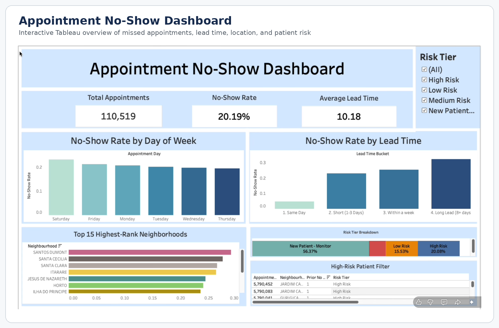

Operations Analyst
ID.me
Supported operational reporting, analyzed performance patterns, and communicated findings that helped teams understand workflows and make informed decisions.
DATA • BUSINESS INTELLIGENCE • OPERATIONS
I combine professional experience in operations and marketing analytics with hands-on SQL, Excel, Tableau, and Power BI work to build clear reporting, practical insights, and decision-ready dashboards.
Northern Virginia • Open to hybrid, onsite, and remote opportunities
I am an Information Systems and Operations Management graduate with professional experience in operations and marketing analytics. I build structured, decision-ready reporting from messy or disconnected data and communicate findings in a way that business partners can use.
PROFESSIONAL BACKGROUND
My portfolio projects build on professional experience supporting operational performance, reporting, and business decision-making—not coursework alone.
ID.me
Supported operational reporting, analyzed performance patterns, and communicated findings that helped teams understand workflows and make informed decisions.
First American Home Warranty
Worked with campaign and business data to evaluate performance, organize reporting, and translate results into clear information for stakeholders.
FEATURED PROJECT • MYSQL + TABLEAU
Analyzed 110,519 medical appointments to identify the factors associated with missed visits. I cleaned and transformed the data in MySQL, engineered appointment lead time, used CTEs and window functions to build patient-level risk tiers, and created an interactive Tableau dashboard for operational follow-up.

MYSQL • DATA CLEANING

Cleaned a global layoffs dataset in MySQL by removing duplicates, standardizing fields and dates, resolving null values, and validating the final dataset for reliable analysis.
EXCEL • DASHBOARD

Analyzed customer demographic and lifestyle data with Excel PivotTables and an interactive dashboard to identify the characteristics most associated with motorcycle purchases.
TABLEAU • MARKET ANALYSIS

Built a Tableau dashboard comparing advertised prices, bedroom counts, listing inventory, geographic patterns, and calendar pricing trends in the Seattle short-term rental market.
POWER BI • SURVEY ANALYSIS

Used Power BI to analyze salary, programming-language preferences, job satisfaction, and barriers to entering data careers across a professional survey dataset.